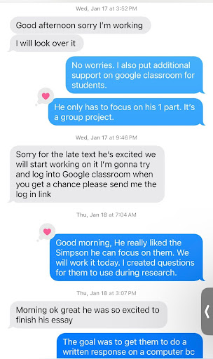
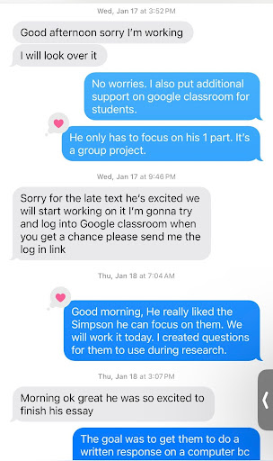
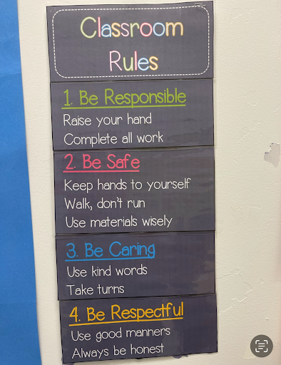
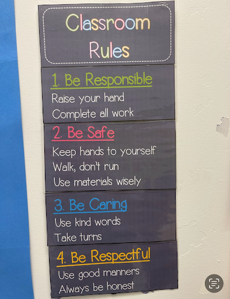

Hi, I'm Felisha L. Castoire.
I'm a
My journey as an educator began long before my tenure within the Department of Education (DOE). Prior to joining the DOE, I operated a daycare for seven years and authored two children's books, "You Are" and "Imagine," which I self-published. In addition to my entrepreneurial pursuits, I initiated a community garden project and actively engaged with children at the local community center and elementary school.
During this time, I also conducted workshops on writing, character development, and anti-bullying efforts in collaboration with the community center and elementary schools. My entry into the DOE followed a less conventional path, starting as a substitute teacher while pursuing my Master's degree in General and Special Education.
My transition to full-time teaching coincided with the onset of the COVID-19 pandemic and a period of social unrest marked by protests and riots. Despite these challenges, I embraced remote teaching with resilience and creativity, striving to maintain a supportive and engaging learning environment for my students. This period underscored my commitment to adaptability and innovative teaching strategies in the face of adversity.

My Journey
My Teaching Philosphy
The purpose of education, as articulated by
Cohen
(2014), takes a philosophical approach, rooted
in
the aims and aspirations of
"our 'Founding Fathers'"
(p. 43). He posits that K-12 education,
including
character education, aims to foster skills,
knowledge, and dispositions that form the basis
for
the ability to love, work, and participate in a
democracy (p. 43). Similarly, the role of an
educator parallels that of a parent, guiding
children through the world by both telling and
showing them, providing hands-on experiences
that
connect learning to real-life issues. This
approach
not only equips students with career-relevant
skills
but also imbues their future endeavors with
purpose
(Alismail & McGuire, 2015).
In my personal philosophy of education, key
principles such as patience, understanding,
fairness, and familial influence guide my
practice.
Acknowledging the diverse family dynamics from
which
students emerge is essential, as it profoundly
shapes their identity and educational journey.
Fairness, in treating each child equitably while
catering to their individual needs, builds trust
and
ensures that no student feels overlooked or
marginalized. Drawing from my own experiences as
a
student, I recognize the importance of attentive
teaching that values every student's voice and
potential.
Working with children entails affording them the
space to make mistakes, learn, and grow.
Patience is
paramount in navigating challenges, allowing for
the
fostering of critical thinking skills through
open-ended questioning. Dewey's philosophy
underscores the importance of teaching children
how
to think rather than what to think, facilitating
continuous reconstruction of experience (Hall,
Quinn, & Gollnick, 2014). Understanding how each
student learns enables tailored instruction that
maximizes their potential, emphasizing
engagement
and authentic learning experiences.
Furthermore, embracing diversity in the
classroom
enriches the learning environment, providing
opportunities for cultural exchange and
understanding. Recognizing the various learning
styles and backgrounds of students fosters
inclusive
teaching practices that promote trust and
respect.
Addressing disparities stemming from
socioeconomic
status, family structure, or cultural
differences
requires sensitivity and proactive support to
ensure
that every child has equal access to educational
opportunities.
In conclusion, effective teaching transcends a
one-size-fits-all approach, acknowledging the
multifaceted nature of student identity and
experience. By embracing diversity and
individuality, educators can create inclusive
learning environments that nurture curiosity,
understanding, and academic success.
My
References
Parent Outreach
 Effective communication between parents,
teachers, and
students forms the cornerstone of a successful educational
journey. When parents are actively engaged in their child's
schooling, they gain insight into their academic progress,
challenges, and achievements. This
collaboration allows
teachers to tailor their instruction to meet individual
needs, fostering a supportive learning environment.
Moreover, students benefit from the consistent message
conveyed by both home and school, reinforcing the importance
of education and encouraging a sense of responsibility for
their learning. By embracing open and transparent
communication, parents, teachers, and students form a
cohesive team dedicated to academic excellence and personal
growth.
Effective communication between parents,
teachers, and
students forms the cornerstone of a successful educational
journey. When parents are actively engaged in their child's
schooling, they gain insight into their academic progress,
challenges, and achievements. This
collaboration allows
teachers to tailor their instruction to meet individual
needs, fostering a supportive learning environment.
Moreover, students benefit from the consistent message
conveyed by both home and school, reinforcing the importance
of education and encouraging a sense of responsibility for
their learning. By embracing open and transparent
communication, parents, teachers, and students form a
cohesive team dedicated to academic excellence and personal
growth.
 To provide frequent information to
families about the
instructional program, I utilize a variety of channels such
as newsletters, emails, parent-teacher conferences, and
online platforms like Class Dojo or ParentSquare.
Additionally, I involve students in preparing materials for
their families by assigning projects or presentations that
require them to communicate their learning and achievements.
This not only enhances student engagement but also empowers
them to take ownership of their education and share their
progress with their families.
To provide frequent information to
families about the
instructional program, I utilize a variety of channels such
as newsletters, emails, parent-teacher conferences, and
online platforms like Class Dojo or ParentSquare.
Additionally, I involve students in preparing materials for
their families by assigning projects or presentations that
require them to communicate their learning and achievements.
This not only enhances student engagement but also empowers
them to take ownership of their education and share their
progress with their families.
To ensure families are regularly informed
about student
progress, I implement a transparent communication system
that includes regular updates on grades, assessments, and
behavior. Students play a key role in designing this system,
providing input on how they prefer to showcase their
progress and what information they believe is important for
their families to know. By involving students in the
process, we create a more personalized and meaningful
communication approach.
When responding to family concerns, I prioritize
professionalism and cultural sensitivity. I actively listen
to their concerns, validate their perspectives, and strive
to find solutions collaboratively. I make efforts to
understand and respect the cultural backgrounds and values
of each family, adapting my communication style and approach
accordingly. Building trust and rapport with families is
paramount, and I ensure that every interaction is conducted
with empathy, respect, and a genuine commitment to
addressing their needs and concerns.
I prioritize
professionalism and cultural sensitivity. I actively listen
to their concerns, validate their perspectives, and strive
to find solutions collaboratively. I make efforts to
understand and respect the cultural backgrounds and values
of each family, adapting my communication style and approach
accordingly. Building trust and rapport with families is
paramount, and I ensure that every interaction is conducted
with empathy, respect, and a genuine commitment to
addressing their needs and concerns.
Various forms of communication have been employed to reach
parents, including Class Dojo, ParentSquare, WhatsApp, text
messages, email, phone calls, and in-person meetings.
Parent Outreach Log
Parent Communication
Student A
Teacher, parent, and student
maintain ongoing communication
regarding Student A's
academic progress and behavior. (See
Exhibit 1) During a
Student-Led
Conference,
Student A shared their goals with
their parent. Despite intending to
fill out a form
for this purpose, Student A ended up
writing their goals on loose-leaf
paper and left
them at school. (See
Exhibit 2)
To
ensure the conference proceeded
smoothly, I texted
images of the documents to the
parent, enabling Student A to
conduct their Student-Led
conference as planned.
Exhibit 1
 

Exhibit 2
Student Learning
In my 12:1:1 class, students range from kindergarten to 4th grade academically in both ELA and Math, with grades 3-5 covering levels from K to 4. Many students are functioning at grade levels ranging from K to 1. The class faces significant behavioral challenges, with each student having an IEP. Two students exhibit autism, others exhibit multiple disabilities, and emotional/behavioral issues, often leading to frequent outbursts. Both academic and emotional challenges make teaching difficult, as disruptions occur due to emotional struggles. Despite these obstacles, some students have shown progress.
Assessments
i-Ready Diagnostics: These assessments are often used to measure students' academic proficiency and growth in key subject areas such as math and reading. They provide standardized data that can help identify students' strengths and areas for improvement, as well as inform instructional decisions. The results from these assessments can be used to personalize learning experiences for students based on their individual needs.
Beginning Of The Year Statistics
Middle Of The Year Statistics
Writing Assessments:
Writing assessments evaluate students' writing skills, including their ability to communicate ideas clearly, organize thoughts coherently, and use appropriate language conventions. These assessments may include prompts or tasks that require students to demonstrate their writing proficiency across different genres or formats. Feedback from writing assessments can help students refine their writing skills over time.Narritive Writing Before & After
Unit & Module Assessments: Unit and module assessments are typically aligned with specific instructional units or modules within a curriculum. They measure students' understanding of the content and skills covered during a particular period of instruction. These assessments may include a variety of question types, such as multiple-choice, short answer, and performance tasks, to assess students' knowledge and application of the material.
Standard Assessments: Standard assessments assess students' mastery of academic standards or learning objectives established by state or national standards. These assessments ensure that students are meeting grade-level expectations and progressing toward proficiency in key subject areas. Standard assessments may be administered periodically throughout the year to monitor students' progress and inform instructional planning.
By using a variety of assessments throughout the year, I can gather comprehensive data on students' academic performance, growth, and areas of need. This information enables me to differentiate instruction, provide targeted support to students, and make data-driven decisions to improve learning outcomes. Additionally, regular assessments help students monitor their own progress, set goals, and take ownership of their learning journey
Student Self-Assessment: Encouraging students to reflect on their own learning is a powerful way to promote metacognition and ownership of learning outcomes. Students can assess their understanding, skills, and progress against learning objectives or criteria provided by the me. This could involve students reviewing their work, identifying strengths and areas for improvement, and setting goals for future learning. Self-assessment activities might include checklists, reflection journals, or self-evaluation rubrics. By engaging in self-assessment, students become more aware of their learning process and are better equipped to take responsibility for their own growth.
Peer-to-Peer Assessment: Peer assessment involves students providing feedback on each other's work based on established criteria or guidelines. This not only reinforces students' understanding of the subject matter but also develops their critical thinking and communication skills. Peer assessment can take various forms, such as peer editing of written assignments, peer review of presentations or projects, or peer evaluation of group collaboration. Through peer assessment, students learn to constructively critique their peers' work, provide specific feedback, and offer suggestions for improvement. Additionally, receiving feedback from peers can be less intimidating for students and can foster a collaborative learning environment.
Teacher Feedback: When I give students feedback it plays a crucial role in guiding students' learning and development. It provides personalized guidance and support based on individual student needs and performance. I can offer feedback on assessments, assignments, and class participation to reinforce positive behaviors, address misconceptions, and suggest areas for improvement. Feedback should be specific, actionable, and focused on helping students achieve learning goals. It can be delivered verbally, written on assignments, or provided through digital platforms. Additionally, I can use feedback conversations as opportunities to engage students in dialogue about their learning progress, goals, and strategies for improvement.
By integrating student self-assessment, peer-to-peer assessment, and teacher feedback into the assessment process, it allows me to create a more holistic approach to evaluating student learning. This approach empowers students to take an active role in their own learning, fosters collaboration and communication skills, and provides targeted support and guidance for continued growth and achievement.
Teacher Feedback
Students Tracking Their Data
For tracking student progress in learning, I employ a comprehensive system that includes regular assessments, progress reports, and student self-reflection. Students contribute information by self-assessing their understanding of concepts, setting goals, and reflecting on their learning journey. During conferences or checkpoints, students participate in interpreting their records by discussing their strengths, areas for growth, and strategies for improvement. This collaborative approach fosters student agency and empowers them to take ownership of their learning process.

Student 2
ELA-Standards / IEP / i-Ready Goals
- Teach one-to-one letter-sound correspondences: v, j, w, x, k, z, y.
- Teach decoding regularly spelled one-syllable words with short a.
- Provide instruction in general academic and domain-specific vocabulary.
- Continue to explore word relationships.
- Teach compound words.
- Teach asking and answering questions about key ideas and details.
- Will increase his ability to understand and respond to literature from various genres by retelling a story aloud to include characters, setting, main idea, beginning, middle, and end in a story in sequence.
- Will increase comprehension of a variety of printed materials by drawing conclusions when reading literary and informational text.
- Will increase writing skills to grade level in area of organization and content by writing sentences which are related to topic.
- Will decode and encode one and two syllable words.
Beginning & Middle Of The Year Diagnostics
Student Work

Professional Responsibilities
Professional Growth & Reflection Workshops Attended
- S.P.I.R.E. Reading Intervention Program - November 15, 2023
- Data Privacy training
- Sexual Harassment Prevention
- SESIS Basics for New Special Education Teachers
- HMH Curriculum
- Unlocking All Students Potential in Mathematics Through Instructional Routines and Protocols
- THE ANNUAL BLOODBORNE PATHOGENS TRAINING
- TREP NYC DOE Understanding Trauma and Trauma Responsive Educational Practices
- The Move-to-Improve workshop - 12/12/22, 1/30/23
- NYSED Culturally Responsive-Sustaining Education Framework (CR-SE)
- DESSA-Training
- Learning Better Ways to Cope: Teaching Individuals with ASD Skills to Replace Challenging Behaviors Instructions - 11/2/22
- Therapeutic Crisis Intervention for Schools (TCIS) - August 2022
- Piloting a curriculum around African American Studies
- The St. Louis Blues: Music, Migration, and the Movement - July 14-July 20, 2024
COLLEGIAL CLASSROOM INTERVISITATION
Focus Of Visit
- Organizational Structures-3-308 Mrs. Dalonzo
- Grouping / Collaborative Work-2-204 Mrs. Kaminsky
- Classroom Management-1-202 Mrs. Bryant
Aim / Lesson Objective:
To observe and learn about effective organizational
structures, grouping strategies, and classroom
management techniques from a colleague's classroom.
During the visit, I observed how the teacher
effectively managed her classroom through clear
organizational structures and group rotations. The
teacher utilized a variety of grouping strategies to
differentiate instruction and promote collaborative
work among students. Specifically, I assisted a
first-grade teacher in setting up her group
rotations, which allowed for targeted instruction
and individualized support for students. I also
observed how the teacher fostered positive social
interactions among students, creating a supportive
learning environment.
Overall, I found the visit to be highly beneficial
in gaining new insights and techniques for
organizing and managing my own classroom. The
collaborative nature of the visit allowed for the
sharing of best practices and the opportunity to
learn from each other's experiences.
Self-Assessment & Reflection
Based on the activities described above, I believe I
demonstrated strong leadership qualities in terms of
honesty, integrity, and confidentiality. I actively
sought out opportunities to learn from my colleagues
and
contributed to the professional growth of others by
assisting in setting up group rotations.
Furthermore, I am highly proactive in serving
students,
as evidenced by my willingness to seek out resources
and
learn new techniques to better meet their needs. I
also
make a concerted effort to challenge negative
attitudes
or practices to ensure that all students, especially
those traditionally underserved, are honored in the
school.
In terms of leadership in team and departmental
decision-making, I actively participate in
collaborative
discussions and contribute to the development of
high
professional standards. Additionally, I consistently
comply with school and district regulations and take
a
leadership role in ensuring that colleagues also
adhere
to these standards.
Overall, I believe I have demonstrated strong
leadership
qualities and a commitment to continuous improvement
in
my teaching practice.
Collaboration & Engagement With The School Community
School Community Involvement Log:
| Year | School Activity | Benefit To School / Self |
|---|---|---|
| 2021 | Circus | Offered Entertainment & Cultural Enrichment |
| 2021 | Movies | Provided Leisure Activites For Students |
| 2022 | Play For Black History Month at P.S. 59 | Celebrated Diversity & Cultural Awareness |
| 2022 | Trips To Decker Farm | Provided Educational & Recreational Experiences For Students |
| 2022 | Bronx Zoo | Promoted Physical & Educational Activity For Students |
| 2022 | Back To School Community Engagement | Supported Welcoming Atmosphere For Students & Families |
| 2022 | Thanksgiving Turkey Distribution | Contributed To Community Outreach & Support |
| 2023 | Field Day | Promoted Physical Activity & Teamwork |
| 2023 | Bowling | Fostered Social Connections & Recreational Activites |
Self-Assessment and Reflection:
I am proud of my active participation in school events,
activities, committees, and trips. My relationships with
colleagues are characterized by mutual support and
cooperation, as demonstrated by my involvement in the
Graduation Committee and other school-wide initiatives.
By creating a DonorsChoose project for graduation
decorations, I made a tangible contribution to enhancing
the school's environment and celebrating student
achievements.
Additionally, I regularly volunteer for school events
such as Thanksgiving turkey distribution, back-to-school
community engagement activities, and field trips. These
efforts contribute to a positive school culture and
foster a sense of community among students, families,
and staff.
Furthermore, my involvement in professional development
activities, such as participating in the School
Leadership Team (SLT), reflects my commitment to
continuous growth and professional inquiry. By actively
engaging in school and district projects, I strive to
make a substantial contribution to the school community
and support its overall mission and goals.
Overall, I am dedicated to actively participating in
school events and projects, fostering collaboration and
inquiry, and making meaningful contributions to the
school community.
School Community Gallery

Teacher Practices
Classroom Environment
An organized classroom environment is essential for
effective teaching and learning. It reduces
distractions, promotes clarity, and maximizes
instructional time. With clear systems for materials and
routines, students feel secure and can focus on their
learning. Smooth transitions between activities enhance
efficiency, while digital organization streamlines
lesson preparation. Overall, an organized classroom
fosters a positive and productive learning environment
where both teachers and students can thrive.
Visual schedules, anchor charts, behavior charts, and
easily accessible materials play a crucial role in
creating an inclusive and supportive classroom
environment. They provide clear structure and
organization, which is essential for promoting student
independence, reducing anxiety, and fostering positive
behavior.
Visual schedules help students understand the sequence
of activities throughout the day, enabling them to
anticipate transitions and manage their time
effectively. This promotes a sense of predictability and
security, especially for students who may struggle with
uncertainty or change.
Anchor charts serve as visual aids to reinforce key
concepts and learning objectives. They provide students
with quick reference points for important information,
vocabulary, and strategies, enhancing comprehension and
retention of content.
Behavior charts offer a visual representation of
students' behavior expectations and progress. They
provide a framework for positive reinforcement and
accountability, encouraging students to take ownership
of their actions and make responsible choices.
Ensuring that materials are easily accessible further
supports student independence and engagement. When
students can easily access resources such as textbooks,
manipulatives, and art supplies, they are empowered to
take initiative in their learning and explore concepts
at their own pace.
Overall, visual schedules, anchor charts, behavior
charts, and accessible materials create a structured and
supportive learning environment where all students can
thrive academically, socially, and emotionally. They
promote organization, clarity, and accountability,
facilitating meaningful learning experiences for every
student.
Classroom Environment Gallery
 

PLANNING & PREPARATION
In designing coherent instruction, I carefully align
learning objectives with engaging activities and
resources to create meaningful learning experiences for
students. Reflecting on teaching, I assess
effectiveness, citing specific examples, and provide
thoughtful suggestions for improvement, drawing on a
diverse set of instructional strategies.
Demonstrating
knowledge of resources, I utilize a range of materials
and technology to support diverse learning needs and
enhance instruction. Setting instructional outcomes, I
establish clear goals and assessments to guide learning
and measure progress. Demonstrating knowledge of content
and pedagogy, I leverage my understanding of subject
matter and effective teaching methods to facilitate
student learning effectively.
Teacher Evaluation
01/09/2024 - Informal Observation Special-Education Teacher 12:1:1
Receiving feedback on my classroom practices is always
valuable, and I'm pleased to hear that my efforts to
foster a supportive and collaborative learning
environment are making a positive impact on classroom
dynamics. The utilization of peer assessment not only
engages students but also helps them develop critical
skills like communication and constructive feedback.
However, the feedback also highlights an area for
improvement: student questioning during morning
meetings. Encouraging students to ask insightful
questions is crucial for deepening their understanding
and fostering curiosity. By facilitating meaningful
dialogue, we can empower students to become active
learners and critical thinkers.
I appreciate the suggestion to explore innovative
strategies for stimulating student questioning, such as
open-ended discussions or multimedia resources. I'm
committed to creating an environment where curiosity
thrives, and I'll work on incorporating these ideas into
our morning meetings to further enrich our learning
experiences.
Overall, I'm grateful for the feedback and excited to
continue growing and developing alongside my students.
03/25/2022 - Formal Observation-Special Education Art Teacher
In this observation of my role as an art teacher, I received an effective rating in Demonstrating knowledge of content and pedagogy, and a highly effective rating for fostering a classroom environment that promotes respect and rapport. These ratings reflect my dedication to incorporating feedback from previous observations and continuously improving my teaching practices. Through the use of visual aids and technology, I have established an inclusive learning environment where all students can actively participate. My proactive approach to behavior management ensures a conducive atmosphere for learning, and my questioning techniques encourage critical thinking and meaningful discussion among students. I am committed to ongoing professional growth and actively seek opportunities to contribute to the school community. Overall, I take pride in the positive learning environment I have cultivated and remain dedicated to further enhancing my teaching skills.
12/01/2021 - Informal Observation-First Observation As An Art Teacher
My first observation as an art teacher provided valuable
insights into my classroom practices. While there were
some areas of strength, such as creating an environment
of respect and rapport, there were also areas identified
for improvement.
In terms of demonstrating knowledge of content and
pedagogy, it became evident that my lesson plan lacked
specificity and alignment with grade-level standards.
Moving forward, I need to ensure that my lesson plans
are more tailored to the needs of my students, including
clear learning objectives and strategies to measure
mastery.
Similarly, while my instruction was coherent and
students were engaged, there is room to diversify my
teaching strategies to accommodate all learners and
consistently reach assessment targets. Incorporating a
variety of learning strategies, such as cue cards or
visual aids, can help ensure that all students are able
to understand and participate in the learning process
effectively.
Additionally, the feedback highlighted the importance of
implementing a feedback mechanism in the classroom to
help students monitor their behavior. Creating
opportunities for student interaction during small group
activities and aligning instruction with individualized
education plan (IEP) goals will also be essential moving
forward.
Overall, this observation has provided me with valuable
insights into areas where I can enhance my teaching
practices. I am committed to incorporating these
suggestions into my future lessons to create a more
inclusive and effective learning environment for all my
students.